Using modelcheck for posterior predictive check
modelcheck.RmdIntroduction
This vignette introduces the modelcheck package, which
facilitates model check visualizations (i.e., comparing observed data to
model predictions) for Bayesian models in R. This vignette follows the
basic workflow in model check to show how modelcheck can
fulfill the requirements by minimal changes in code. For more detail
description on geoms and comparative layouts, see
vignette("uncert-rep") and
vignette("comp-layout").
Setup
The following libraries are required to run this vignette:
library(dplyr)
#>
#> Attaching package: 'dplyr'
#> The following objects are masked from 'package:stats':
#>
#> filter, lag
#> The following objects are masked from 'package:base':
#>
#> intersect, setdiff, setequal, union
library(purrr)
library(modelcheck)
library(ggplot2)
library(ggdist)
library(cowplot)
library(rstan)
#> Loading required package: StanHeaders
#> rstan (Version 2.21.8, GitRev: 2e1f913d3ca3)
#> For execution on a local, multicore CPU with excess RAM we recommend calling
#> options(mc.cores = parallel::detectCores()).
#> To avoid recompilation of unchanged Stan programs, we recommend calling
#> rstan_options(auto_write = TRUE)
library(brms)
#> Loading required package: Rcpp
#> Loading 'brms' package (version 2.19.0). Useful instructions
#> can be found by typing help('brms'). A more detailed introduction
#> to the package is available through vignette('brms_overview').
#>
#> Attaching package: 'brms'
#> The following object is masked from 'package:rstan':
#>
#> loo
#> The following objects are masked from 'package:ggdist':
#>
#> dstudent_t, pstudent_t, qstudent_t, rstudent_t
#> The following object is masked from 'package:stats':
#>
#> ar
library(gganimate)
theme_set(theme_tidybayes() + panel_border())These options help Stan run faster:
rstan_options(auto_write = TRUE)
options(mc.cores = parallel::detectCores())Model
Let’s fit a simple model on datasets::mtcars with
default priors and four predictors:
get_prior(bf(mpg ~ disp + carb + vs + am), data = mtcars)
#> prior class coef group resp dpar nlpar lb ub
#> (flat) b
#> (flat) b am
#> (flat) b carb
#> (flat) b disp
#> (flat) b vs
#> student_t(3, 19.2, 5.4) Intercept
#> student_t(3, 0, 5.4) sigma 0
#> source
#> default
#> (vectorized)
#> (vectorized)
#> (vectorized)
#> (vectorized)
#> default
#> default
model = brm(
bf(mpg ~ disp + carb + vs + am),
init = "0",
data = mtcars,
iter = 6000,
sample_prior = TRUE,
file = "models/get-started_model.rds" # cache model (can be removed)
)The results look like this:
model
#> Family: gaussian
#> Links: mu = identity; sigma = identity
#> Formula: mpg ~ disp + carb + vs + am
#> Data: mtcars (Number of observations: 32)
#> Draws: 4 chains, each with iter = 6000; warmup = 3000; thin = 1;
#> total post-warmup draws = 12000
#>
#> Population-Level Effects:
#> Estimate Est.Error l-95% CI u-95% CI Rhat Bulk_ESS Tail_ESS
#> Intercept 26.36 2.98 20.52 32.22 1.00 6901 7124
#> disp -0.02 0.01 -0.04 -0.01 1.00 7061 8104
#> carb -1.26 0.39 -2.05 -0.50 1.00 8987 7811
#> vs 1.21 1.67 -2.13 4.45 1.00 7621 8050
#> am 4.13 1.43 1.31 6.95 1.00 7844 8398
#>
#> Family Specific Parameters:
#> Estimate Est.Error l-95% CI u-95% CI Rhat Bulk_ESS Tail_ESS
#> sigma 2.76 0.40 2.12 3.66 1.00 8124 7810
#>
#> Draws were sampled using sampling(NUTS). For each parameter, Bulk_ESS
#> and Tail_ESS are effective sample size measures, and Rhat is the potential
#> scale reduction factor on split chains (at convergence, Rhat = 1).Generate graphical posterior predictive checks
Now that we have the model, the model check begins: it usually starts
with a density plot for posterior predictive distribution and data
observed distribution. mcplot() here generates a density
plot for model check by default if no other options defined.
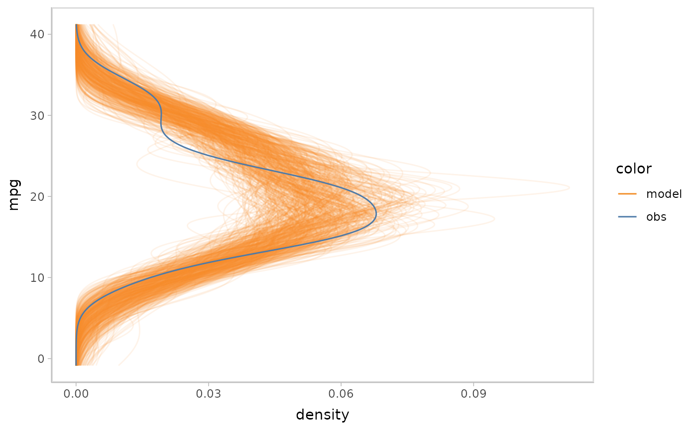
modelcheck puts the response variable on y axis by
default. You can flip the plot to generate a canonical posterior
predictive check by density plot. modelcheck enables you to
do this by mc_gglayer to add a ggplot2 layer
to model check.
model %>%
mcplot() +
mc_gglayer(coord_flip())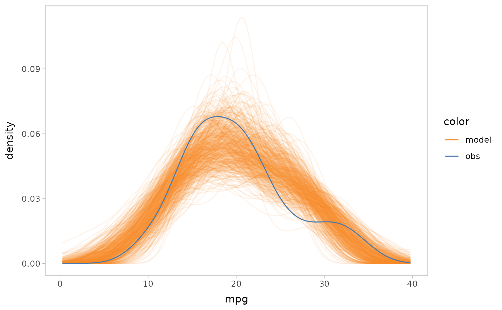
mcplot() uses a lot of defaults to make a model check
visualization when users don’t explicitly define everything. The above
lines are roughly equivalent to following:
model %>%
mcplot() +
mc_distribution("predictive") +
mc_model_line(stat = "density", alpha = .1) +
mc_obs_line(stat = "density") +
mc_layout_superposition() +
mc_gglayer(coord_flip())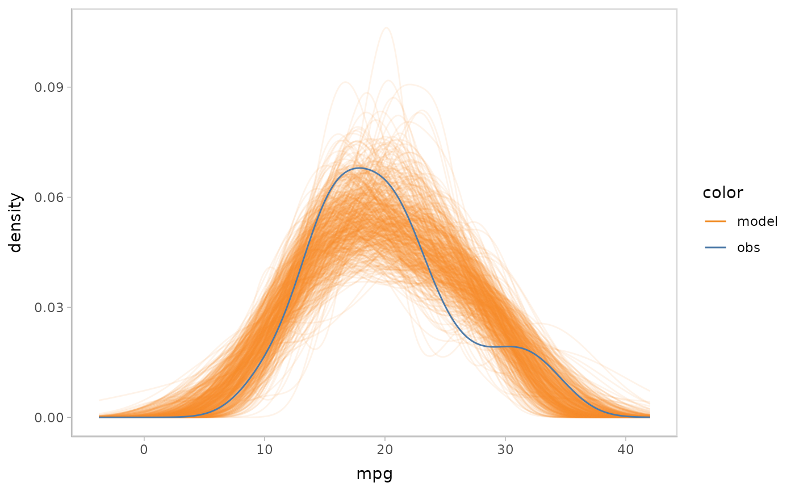
mc_distribution() defines how modelcheck
would draw posterior distribution, where "predictive" says
to draw from posterior predictive distribution and
newdata = "obs" says to use the observation dataset to
generate. mc_model_geom_line() and
mc_obs_geom_line() define the geom of model predictions and
data observations and choose a suitable geom for users based on data
types. mc_comp_layout() defines the comparative layout of
the model check, i.e. how to compare model predictions and data
observations. The option "sup" is for superposition, which
overlaps the predictions and observations in one plot.
mc_gglayer() adds ggplot2::layer() to model
check visualization. We will discuss more details about these functions
in later sections.
Add conditional predictions for posterior predictive checks
Model check not only is about single variable check but also involves
conditional variables and checks the response variable’s marginal
effects on them. For example, we want to check the impact of
disp on mpg in the above model. By using
modelcheck, it’s pretty easy to do this by just adding one
line code:
model %>%
mcplot() +
mc_condition_on(x = vars(disp))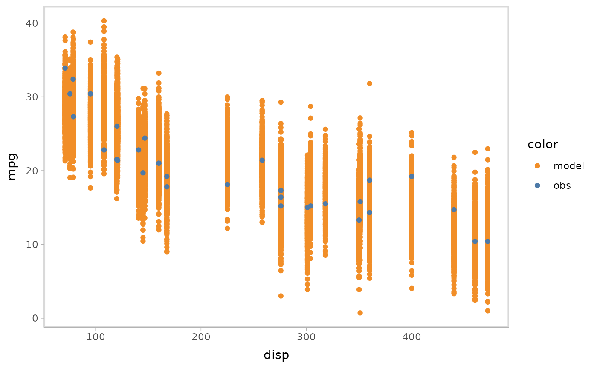
Then you can easily apply some uncertainty representations to model
predictions in modelcheck. For example, lineribbon
and point+interval
are shown below.
- Lineribbon:
model %>%
mcplot() +
mc_model_lineribbon() +
mc_condition_on(x = vars(disp))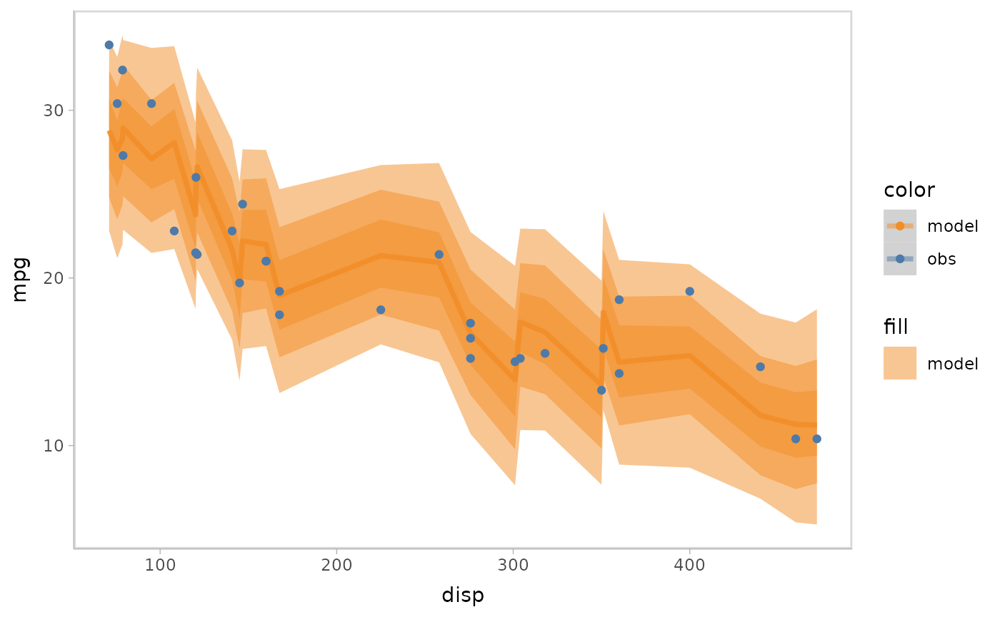
- Point + interval
model %>%
mcplot() +
mc_model_pointinterval() +
mc_condition_on(x = vars(disp))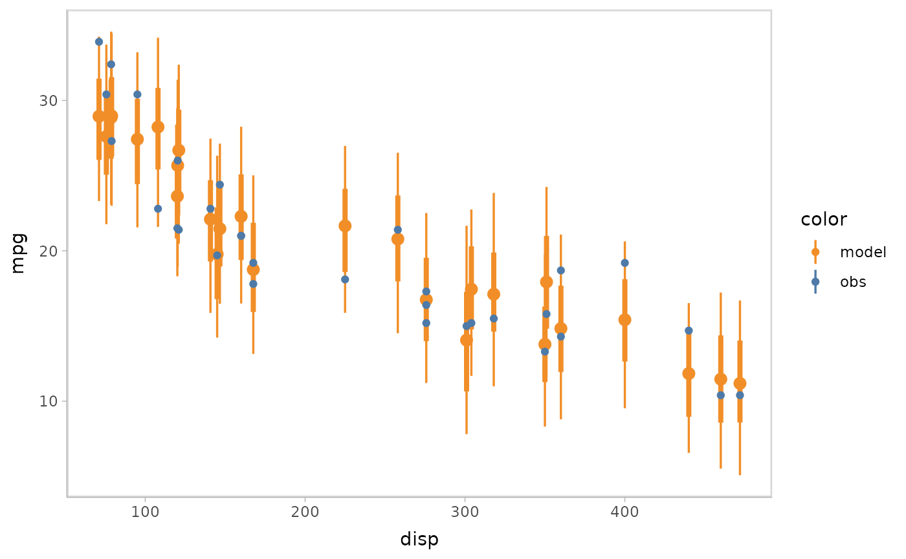
You can also show different draws by animation (HOPs.).
model %>%
mcplot() +
mc_model_point(draw = "hops") +
mc_condition_on(x = vars(disp))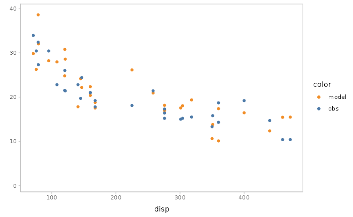
Or you can even use HOPs and other uncertainty representations together.
model %>%
mcplot() +
mc_model_pointinterval(draw = "hops") +
mc_condition_on(x = vars(disp))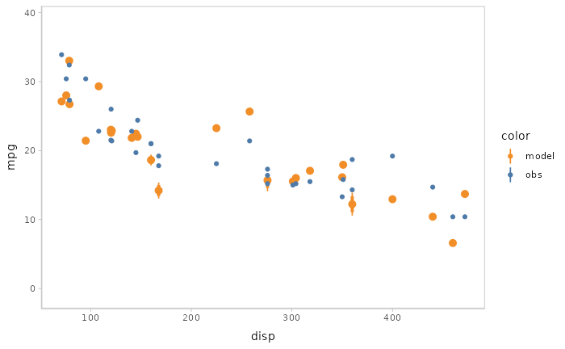
Changing comparative layouts
Since model check is checking the model’s performance by comparing
with observed data, modelcheck package also enables users
to change comparative layouts for model prediction and data observations
through function mc_comp_layout(). modelcheck
has four predefined comparative layouts: juxtaposition, superposition,
nested juxtaposition, and explicit-encoding.
Juxtaposition puts the model predictions and data observations side by side. Juxtaposition is especially useful when model predictions and data observations are overlapped in superposition so they can not be distinguished well.
model %>%
mcplot() +
mc_model_eye() +
mc_obs_eye() +
mc_condition_on(x = vars(carb)) +
mc_layout_juxtaposition()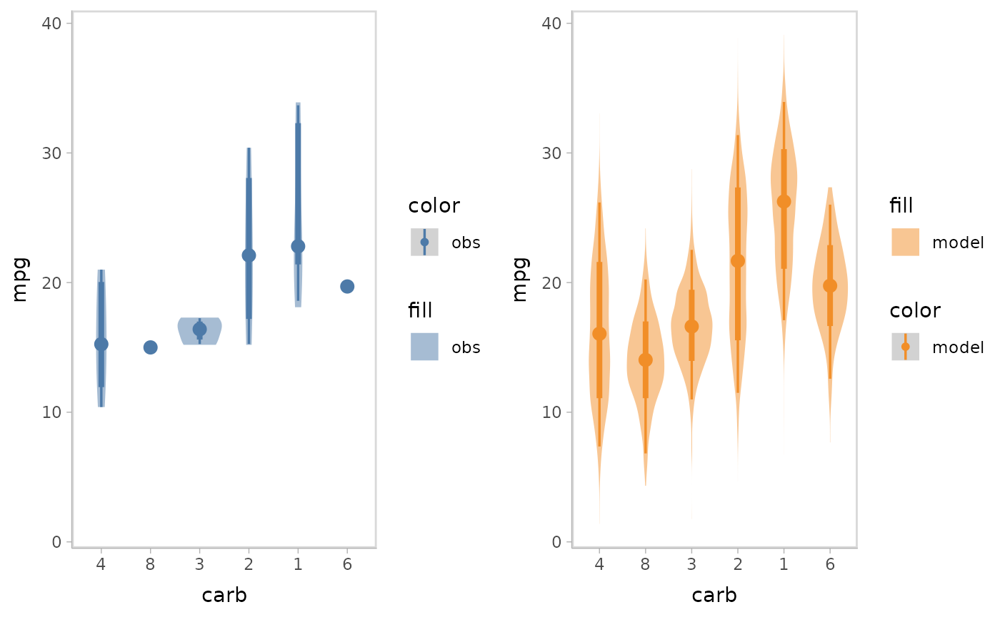
Superposition is the default comparative layout by
modelcheck. It puts the model predictions at the top of
data observations and shows them in one plots.
model %>%
mcplot() +
mc_model_eye() +
mc_obs_eye() +
mc_condition_on(x = vars(carb)) +
mc_layout_superposition()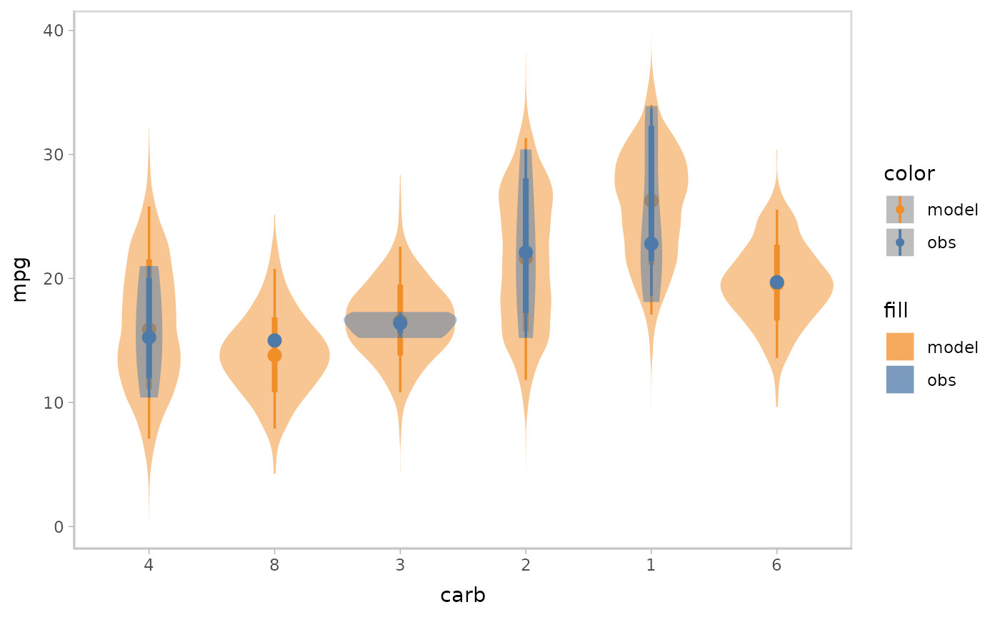
When checking model conditional on a discrete variable, you might want the comparative layout neither to be superposition, since that would make data points overlapped, nor to be juxtaposition, since the visual distance between model predictions and data observations would be too large to check through. At this time, nested juxtaposition would be a good choice, which puts model predictions and data observations in one plot but does not make them overlapped.
model %>%
mcplot() +
mc_model_eye() +
mc_obs_eye() +
mc_condition_on(x = vars(carb)) +
mc_layout_nested()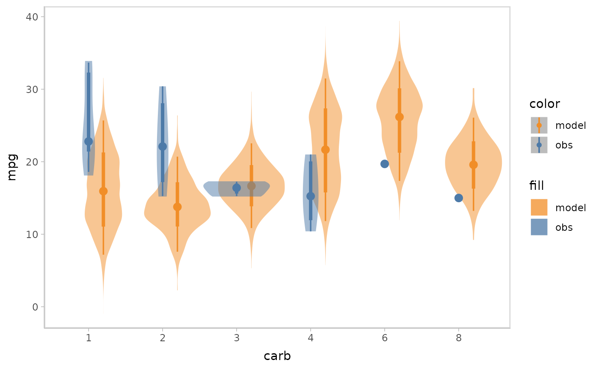
Explicit-encoding focuses on revealing the relationship between model
predictions and data observations by explicitly encoding or calculating
in visualizations. Some common examples could be residual plot, Q-Q
plot, and wormplots. modelcheck supports
explicitly-encoding by enabling users to pass in the operation
(exp_op) they want to do in explicitly-encoding comparison.
modelcheck predefines several common explicitly-encodings
(e.g. residual plot and Q-Q plot) but users can still pass in a
customized operation function.
Residual plot with uncertainty representation lineribbon:
model %>%
mcplot() +
mc_model_lineribbon() +
mc_layout_encoding(transform = "residual") +
mc_condition_on(x = vars(disp)) +
mc_gglayer(geom_hline(yintercept = 0))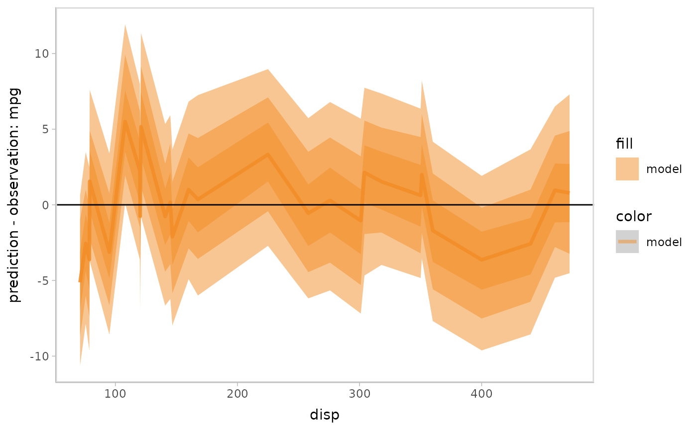
Q-Q plot:
model %>%
mcplot() +
mc_layout_encoding(transform = "qq") +
mc_gglayer(geom_abline())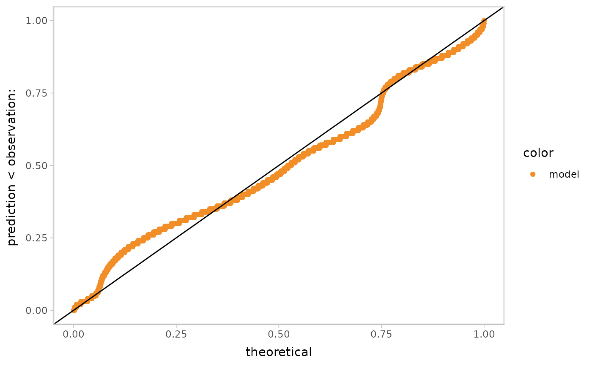
You can also cutomize the operation function to make the
explicitly-encoding into any explicit comparison you want. The
customized function should take an data frame including two columns for
predictions and observations as input and return a data frame with
columns named y_axis and x_axis
(optional).
Standardized residual plot (using customized operation function):
std_res_func = function(data) {
data %>%
mutate(y_axis = prediction - observation) %>%
mutate(y_axis = y_axis / sd(y_axis))
}
model %>%
mcplot() +
mc_model_lineribbon() +
mc_layout_encoding(transform = std_res_func) +
mc_condition_on(x = vars(disp)) +
mc_gglayer(geom_hline(yintercept = 0))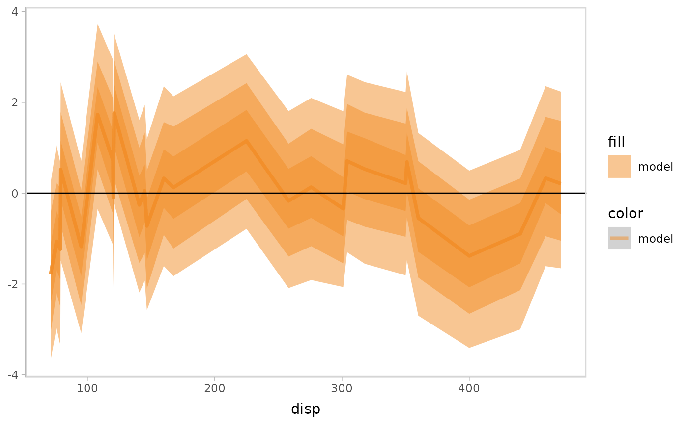